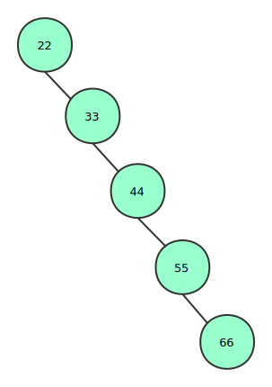

<!DOCTYPE html>
<html>
<head><meta name="generator" content="Hexo 3.9.0">
  <!-- hexo-inject:begin --><!-- hexo-inject:end --><meta charset="UTF-8">
  
  <meta name="description" content="lightdm&#39;s Blog">
  

  
  <meta name="keywords" content="blog.IT.think">
  
  
  <meta name="google-site-verification" content="true">
  <meta name="baidu-site-verification" content="true">
  <meta name="msvalidate.01" content="BBA0F05A054A52937A445B0457B5D099">
  
  <title style="text-align:center">二叉搜索树BST | 月之燃梦</title>
  <meta name="viewport" content="width=device-width, initial-scale=1, maximum-scale=1">
  <meta http-equiv="Content-Type" content="text/html; charset=UTF-8">
  <meta name="description" content="二叉搜索树(Binary Search Tree)又名二叉查找树、二叉排序树，它要么是一棵空树，要么满足以下条件:  若其左子树不为空，则左子树所有节点的值小于根节点的值； 若其右子树不为空，则其右子树所有节点值均大于他的根节点的值； 其左右子树也为二叉查找树。">
<meta name="keywords" content="二叉搜索树,BST">
<meta property="og:type" content="article">
<meta property="og:title" content="二叉搜索树BST">
<meta property="og:url" content="https://www.lightdream.xyz/BinarySearchTree.html">
<meta property="og:site_name" content="月之燃梦">
<meta property="og:description" content="二叉搜索树(Binary Search Tree)又名二叉查找树、二叉排序树，它要么是一棵空树，要么满足以下条件:  若其左子树不为空，则左子树所有节点的值小于根节点的值； 若其右子树不为空，则其右子树所有节点值均大于他的根节点的值； 其左右子树也为二叉查找树。">
<meta property="og:locale" content="zh-Hans">
<meta property="og:image" content="https://www.lightdream.xyz/image/BSTDegenerate.svg">
<meta property="og:updated_time" content="2019-02-26T02:54:59.408Z">
<meta name="twitter:card" content="summary">
<meta name="twitter:title" content="二叉搜索树BST">
<meta name="twitter:description" content="二叉搜索树(Binary Search Tree)又名二叉查找树、二叉排序树，它要么是一棵空树，要么满足以下条件:  若其左子树不为空，则左子树所有节点的值小于根节点的值； 若其右子树不为空，则其右子树所有节点值均大于他的根节点的值； 其左右子树也为二叉查找树。">
<meta name="twitter:image" content="https://www.lightdream.xyz/image/BSTDegenerate.svg">
  
  
    <link rel="icon" href="/css/images/favicon.ico">
  
  <link rel="stylesheet" href="css/style.css">
  
<!-- Google Analytics -->
<script type="text/javascript">
(function(i,s,o,g,r,a,m){i['GoogleAnalyticsObject']=r;i[r]=i[r]||function(){
(i[r].q=i[r].q||[]).push(arguments)},i[r].l=1*new Date();a=s.createElement(o),
m=s.getElementsByTagName(o)[0];a.async=1;a.src=g;m.parentNode.insertBefore(a,m)
})(window,document,'script','//www.google-analytics.com/analytics.js','ga');

ga('create', 'true', 'auto');
ga('send', 'pageview');

</script>
<!-- End Google Analytics -->


  
  <link rel="stylesheet" href="//cdn.bootcss.com/highlight.js/9.2.0/styles/vs.min.css">
  <script src="//cdn.bootcss.com/highlight.js/9.2.0/highlight.min.js"></script>
  <!-- baidutongji -->
  <script type="text/javascript">
		var _hmt = _hmt || [];
		(function() {
		  var hm = document.createElement("script");
		  hm.src = "https://hm.baidu.com/hm.js?21db01c8f539883ad7f58ebd48f05a73";
		  var s = document.getElementsByTagName("script")[0]; 
		  s.parentNode.insertBefore(hm, s);
		})();
   </script>
   <!--baiduformit -->
   <script>
	(function(){
		var bp = document.createElement('script');
		var curProtocol = window.location.protocol.split(':')[0];
		if (curProtocol === 'https') {
			bp.src = 'https://zz.bdstatic.com/linksubmit/push.js';        
		}
		else {
			bp.src = 'http://push.zhanzhang.baidu.com/push.js';
		}
		var s = document.getElementsByTagName("script")[0];
		s.parentNode.insertBefore(bp, s);
	})();
	</script>
	<script src="//unpkg.com/valine/dist/Valine.min.js"></script>
<link rel="alternate" href="atom.xml" title="月之燃梦" type="application/atom+xml"><!-- hexo-inject:begin --><!-- hexo-inject:end -->
</head></html>
<body class="home blog custom-background custom-font-enabled single-author">
  <!-- hexo-inject:begin --><!-- hexo-inject:end --><div id="page" class="feed site">
      <header id="masthead" class="site-header" role="banner">
    <hgroup>
      <h1 class="site-title">
        <a href="index.html" title="月之燃梦" rel="home">月之燃梦</a>
      </h1>
      
        <h2 class="site-description">
          <a href="index.html" id="subtitle">If it is not fun, why do it?</a>
        </h2>
      
    </hgroup>

    <nav id="site-navigation" class="main-navigation" role="navigation">
            <button class="menu-toggle">菜单</button>
            <a class="assistive-text" href="/#content" title="跳至内容">跳至内容</a><!--TODO-->
            <div id="menu-main-content" class="menu-main-container">
                <ul id="menu-main" class="nav-menu">
                
                    <li class="menu-item menu-item-type-post_type menu-item-object-page"><a href="index.html">主页</a></li>
                
                    <li class="menu-item menu-item-type-post_type menu-item-object-page"><a href="/archives">归档</a></li>
                
                    <li class="menu-item menu-item-type-post_type menu-item-object-page"><a href="/views">关于</a></li>
                
                    <li class="menu-item menu-item-type-post_type menu-item-object-page"><a href="/atom.xml">订阅</a></li>
                
                    <li class="menu-item menu-item-type-post_type menu-item-object-page"><a href="/road">求索</a></li>
                
                </ul>
            </div>
    </nav>
	<script src='//unpkg.com/valine/dist/Valine.min.js'></script>
</header>
      <div id="main" class="wrapper">
        <div id="primary" class="site-content">
			<div id="content" role="main"><article id="post-BinarySearchTree" class="post-BinarySearchTree post type-post status-publish format-standard hentry">
		
      <center><header class="entry-header">
        
        
  
    <h1 class="entry-title article-title">
      二叉搜索树BST
    </h1>
  

		<div style="margin-top:10px;">
    <span class="post-time1">
      <span class="post-meta-item-icon">
        <i class="fa fa-keyboard-o"></i>
        <span class="post-meta-item-text">字数统计:</span>
        <span class="post-count">1,555字</span>
      </span>
    </span>
	&nbsp;|
    <span class="post-time2">
    <span class="post-meta-item-icon">
        <i class="fa fa-hourglass-half"></i>
        <span class="post-meta-item-text">阅读时长:约</span>
        <span class="post-count">6&nbsp;分钟</span>
      </span>
    </span>
</div>
        	 
      </header></center>
	  <!-- .entry-header -->
    <div class="entry-content">
      
		<center><span id="busuanzi_container_page_pv">
		总阅读量<span id="busuanzi_value_page_pv"></span>次
		</span></center>
		</br></br>
        <script src="\assets\js\APlayer.min.js"> </script><p>二叉搜索树(Binary Search Tree)又名二叉查找树、二叉排序树，它要么是一棵空树，要么满足以下条件:</p>
<ul>
<li>若其左子树不为空，则左子树所有节点的值小于根节点的值；</li>
<li>若其右子树不为空，则其右子树所有节点值均大于他的根节点的值；</li>
<li>其左右子树也为二叉查找树。    <a id="more"></a>    
<h3 id="一、-特点"><a href="#一、-特点" class="headerlink" title="一、 特点"></a>一、 特点</h3>　　通过中序遍历二叉搜索树可以得到一个有序的序列。另一方面，通过对一个序列构造二叉搜索树可以将其变为有序，构造构造过程即为排序过程。<h5 id="优点"><a href="#优点" class="headerlink" title="优点"></a>优点</h5>　　如果BST左右子树的节点数目保持平衡，即所有非叶子节点的左右子树数目差不多，则它的搜索性能堪比二分查找；二分查找应用于以连续内存空间存储且有序的数组，而以树这种数据结构存储时，对于插入节点和删除节点则比数组这种数据结构高效很多，甚至能达到常数时间。  <h5 id="缺点"><a href="#缺点" class="headerlink" title="缺点"></a>缺点</h5>　　如果构造二叉搜索树时，没有选好根节点那么构造的二叉搜索树可能会成为这个样子，<br><center></center><br>这样的结构则完全失去了二叉搜索树的优势。所以要尽量让二叉搜索树保持平衡，关于保持平衡就要涉及平衡二叉搜索树(AVL)，红黑树(RBT)等数据结构，本文先不介绍。<h3 id="二、实践"><a href="#二、实践" class="headerlink" title="二、实践"></a>二、实践</h3>　　以一个公司职员管理系统为例，其底层数据结构用二叉搜索树实现，具备增加加节点，删除节点，修改节点，搜索节点基本功能，主要是实践出真知。二叉树的一个节点也为一个职员，其节点类型如下：<pre><code>typedef struct Node
{
  struct Node *left = nullptr;            // 左子树指针
  struct Node *right = nullptr;            // 右子树指针
  string name;                        // 职员姓名
  string gender;                        // 职员性别
  string num;                            // 节点的关键字，为社保号，唯一
  string date;                            // 入职日期
  int salary = 0;                        // 薪资
  static int total;                        // 静态变量记录公司职员总人数。
  Node() {}
  Node(string na, string gen, string number, string da, int s)        // 构造方法
  {
      name.assign(na);
      gender.assign(gen);
      num.assign(number);
      date.assign(da);
      salary = s;
      total++;                            // 每构造一个对象总数加一
  }
  ~Node() {}
} Staff;
int Staff::total = 0;
</code></pre>下面是增、删、改、查的一些成员函数，分别用递归和非递归实现: <h4 id="增加节点"><a href="#增加节点" class="headerlink" title="增加节点"></a>增加节点</h4>　　即二叉搜索树增加节点，逻辑清晰：</li>
</ul>
<ol>
<li>判定二叉搜索树是否为空，是则直接加入新节点。否则执行第二步</li>
<li>将新节点的关键字与根节点的关键字相比，小于则进入左子树继续比较以寻找叶子节点并加入新节点，大于则进入右子树寻找加入新节点的位置，</li>
</ol>
<ul>
<li><strong>递归</strong><pre><code>void addStaff(Staff **r, string m[])        // 传递指针的指针，可在任何地方修改指针指向的地址的内容而不用返回被改变的根节点。
{
   if(nullptr == (*r))                     // 如果二叉搜索树或节点为空，直接添加新节点。    
   {
       *r = new Staff(m, m[1], m[2], m[3], atoi(m[4].c_str()));
       cout &lt;&lt; &quot;添加职员成功！&quot; &lt;&lt; endl;
       return;
   }
   if(m[2] &lt; (*r)-&gt;num)            // 关键字值小于根节点的关键字，新节点加在左子树里面
   {
       addStaff(&amp;(*r)-&gt;left, m);
   }
   else                            // 关键字值大于根节点的关键字，新节点加在右子树里面
   {
       addStaff(&amp;(*r)-&gt;right, m);
   }
}
</code></pre></li>
<li><strong>非递归</strong><pre><code>void addStaff(Staff **r, string m[])      // 传递指针的指针，可在任何地方修改指针指向的地址的内容而不用返回。
{
  if(r == nullptr)                    // 二叉搜索树为空，直接加入节点。
  {    
      *r = new Staff(m[0], m[1], m[2], m[3], atoi(m[4].c_str()));
      cout&lt;&lt;&quot;添加成功!&quot;&lt;&lt;endl;
      return;
  }
  while(r != nullptr)                
  {
     if(m[2] &lt; (*r)-&gt;num)            // 新节点关键字小于根节点，进入左子树寻找
      {
          r = &amp;(*r)-&gt;left;
      }
      else                            // 进入右子树寻找位置
      {
          r = &amp;(*r)-&gt;right;
      }
      if(nullptr == (*r))                
      {
          *r = new Staff(m[0], m[1], m[2], m[3], atoi(m[4].c_str()));
          cout&lt;&lt;&quot;添加成功!&quot;&lt;&lt;endl;
          break;
      }
  }
}
</code></pre><h4 id="删除节点"><a href="#删除节点" class="headerlink" title="删除节点"></a>删除节点</h4>　　删除节点情况稍微复杂一些，考虑一下：</li>
<li>要删除的节点只有左子树或右子树，或都没有：考虑删除的节点只有左子树，直接将其左子树赋给该节点：反之将右子树赋给该节点。如果删除的是叶子节点，则直接删除该节点(亦左子树或右子树都可以赋给它)。</li>
<li>要删除的节点既有左子树又有右子树，找出其右子树最小节点数据覆盖被删除的节点信息，并删除该最小节点。</li>
<li>递归<pre><code>int deleteStaff(Staff *&amp;r,string num)
{
  if(nullptr == r)        // BST为空
  {
      return -1;
  }
  if(r-&gt;num &gt; num)        // 搜索左子树
  {
      return deleteStaff(r-&gt;left,num);
  }
  else if(r-&gt;num &lt; num)   // 搜索右子树
  {
      return deleteStaff(r-&gt;right,num);
  }
  else
  {
      if(r-&gt;left == nullptr || r-&gt;right == nullptr)       // 删除的节点只有左子树或右子树
      {
          r = (r-&gt;left != nullptr)?r-&gt;left:r-&gt;right;
          return 1;
      }
      else
      {
          Staff *temp = r-&gt;right;      // 从右子树找一个最小节点并用它来代替被删除的节点，再删除该最小节点。
          while(temp-&gt;left != nullptr)
          {
              temp = temp-&gt;left;
          }
          // 覆盖信息
          r-&gt;name = temp-&gt;name;
          r-&gt;gender = temp-&gt;gender;
          r-&gt;num = temp-&gt;num;
          r-&gt;date = temp-&gt;date;
          r-&gt;salary = temp-&gt;salary;
          // 删除最小节点
          deleteStaff(r-&gt;right,temp-&gt;num);
          return 1;
      }
  }
  return -1;
}
</code></pre><h4 id="修改节点和查询节点"><a href="#修改节点和查询节点" class="headerlink" title="修改节点和查询节点"></a>修改节点和查询节点</h4>　　其原理和遍历二叉搜索树相似，直接介绍递归与非递归的中序遍历。<h4 id="中序遍历二叉搜索树"><a href="#中序遍历二叉搜索树" class="headerlink" title="中序遍历二叉搜索树"></a>中序遍历二叉搜索树</h4></li>
<li>递归<pre><code>void inOrderTraverse(Staff *r )      // 中序遍历BST
{       if(r == nullptr)
      {
          return;
      }
  if(r != nullptr) 
  {          // 递归中序遍历BST
      inOrderTraverse(r-&gt;left);
      cout &lt;&lt; r-&gt;name &lt;&lt; &quot;\t&quot; &lt;&lt; r-&gt;gender &lt;&lt; &quot;\t&quot; &lt;&lt; r-&gt;num &lt;&lt; &quot;\t&quot; &lt;&lt; r-&gt;date &lt;&lt; &quot;\t&quot; &lt;&lt; r-&gt;salary &lt;&lt; endl;
      inOrderTraverse(r-&gt;right);
      }
}
</code></pre></li>
<li>非递归<pre><code>void inOrderTraverse(Staff *r )      //非递归 中序遍历BST
{  
  if(r == nullptr)
  {
          return;
  }
  stack&lt;Staff*&gt; s;
  Staff *p=r;
  while(p != nullptr || !s.empty())   // 到叶子节点或栈空
  {
      while(p != nullptr)                // 先放入相对根节点，次放其左子树，直到左子树空
      {
          s.push(p);
          p = p-&gt;left;
      }                        
      if(!s.empty())                    // 访问节点：左、根、右
      {
          p = s.top();
          cout &lt;&lt; p-&gt;name &lt;&lt; &quot;\t&quot; &lt;&lt; p-&gt;gender &lt;&lt; &quot;\t&quot; &lt;&lt; p-&gt;num &lt;&lt; &quot;\t&quot; &lt;&lt; p-&gt;date &lt;&lt; &quot;\t&quot; &lt;&lt; p-&gt;salary &lt;&lt; endl; 
          s.pop();
          p = p-&gt;right;
      }
  }
}
</code></pre>完整职员管理系统请转移至<a href="https://github.com/lightingmoon/">我的Github</a>。如果有错误，万望能帮我指出来，不胜感激。</li>
</ul>
	
		</br>
		<footer style="text-align: center" class="entry-meta">雪林于
		<a href="">
   <time datetime="2018-08-03T11:25:31.254Z" class="entry-date">
        2018年08月03日 19:25
    </time>
</a>
		
  <span class="article-delim">&#8226;</span>
  <div class="article-category">
  <a class="article-category-link" href="categories/算法与数据结构/">算法与数据结构</a>
  </div>

		
  <span class="article-delim">&#8226;</span>
  <ul class="article-tag-list"><li class="article-tag-list-item"><a class="article-tag-list-link" href="tags/BST/">BST</a></li><li class="article-tag-list-item"><a class="article-tag-list-link" href="tags/二叉搜索树/">二叉搜索树</a></li></ul>

		
			<!-- 来必力City版安装代码 -->
<div id="lv-container" data-id="city" data-uid="MTAyMC8zODM0Mi8xNDg3MA==">
<div> </br> 抛砖引玉 亦或 他山之石，可以攻玉。
</div>
<div id="vcomments"></div>
    <script>
        new Valine({
            el: '#vcomments',
            appId: 'BcwJfKAtl8xeKihdgIxxzKUN-gzGzoHsz',
            appKey: 'YmFEsmcyLDgy8AaXNjFoY9Ge'
        })
    </script>
			
		</footer>
		
    </div>
	<!-- .entry-content -->
</article>

    
<nav class="nav-single">
    <h3 class="assistive-text">文章导航</h3>
    
        <span class="nav-previous"><a href="C++SocketTest.html" rel="prev"><span class="meta-nav">←</span> C++ Win32网络编程</a></span>
    
    
        <span class="nav-next"><a href="unionFindSet.html" rel="next">并查集入门 <span class="meta-nav">→</span></a></span>
    
</nav><!-- .nav-single -->


</div>
		</div>
        <div id="secondary" class="widget-area" role="complementary">
  
    
	<aside class="widget">
        <h3 class="widget-title">站内搜索</h3>
        <div id="site_search">
			<input type="text" id="local-search-input" style="width: 200px;" results="0"/>
			<div id="local-search-result"></div>
        </div>
	</aside>
	
	
  
    
  <aside class="widget">
    <h3 class="widget-title">后起之秀</h3>
    <div class="widget-content">
      <ul>
        
          <li>
            <a href="someWordOperationTips.html">一些Word操作技巧</a>
          </li>
        
          <li>
            <a href="GanssianDisturbancePSO.html">基于高斯扰动的粒子群优化算法算法</a>
          </li>
        
          <li>
            <a href="Python-list.html">Python append()方法与深、浅拷贝</a>
          </li>
        
          <li>
            <a href="NeteaseMusicOutchainPlayer.html">关于网易云音乐外链播放器的一些问题</a>
          </li>
        
          <li>
            <a href="ToHailBosomFriends.html">致敬：高山流水</a>
          </li>
        
          <li>
            <a href="ParticleSwamOptimizaton1.html">粒子群算法研究(2)</a>
          </li>
        
      </ul>
    </div>
  </aside>

  
    
  <aside class="widget">
    <h3 class="widget-title">文以类聚</h3>
    <div class="widget-content">
      <ul class="category-list"><li class="category-list-item"><a class="category-list-link" href="categories/C/">C++</a><span class="category-list-count">3</span></li><li class="category-list-item"><a class="category-list-link" href="categories/PAT/">PAT</a><span class="category-list-count">4</span></li><li class="category-list-item"><a class="category-list-link" href="categories/Python/">Python</a><span class="category-list-count">1</span></li><li class="category-list-item"><a class="category-list-link" href="categories/优化算法/">优化算法</a><span class="category-list-count">4</span></li><li class="category-list-item"><a class="category-list-link" href="categories/备忘/">备忘</a><span class="category-list-count">2</span></li><li class="category-list-item"><a class="category-list-link" href="categories/操作系统/">操作系统</a><span class="category-list-count">1</span></li><li class="category-list-item"><a class="category-list-link" href="categories/机器学习/">机器学习</a><span class="category-list-count">1</span></li><li class="category-list-item"><a class="category-list-link" href="categories/汇编语言/">汇编语言</a><span class="category-list-count">1</span></li><li class="category-list-item"><a class="category-list-link" href="categories/算法与数据结构/">算法与数据结构</a><span class="category-list-count">6</span></li><li class="category-list-item"><a class="category-list-link" href="categories/编译原理/">编译原理</a><span class="category-list-count">1</span></li><li class="category-list-item"><a class="category-list-link" href="categories/述梦/">述梦</a><span class="category-list-count">1</span></li><li class="category-list-item"><a class="category-list-link" href="categories/迷人数学/">迷人数学</a><span class="category-list-count">1</span></li><li class="category-list-item"><a class="category-list-link" href="categories/静夜思/">静夜思</a><span class="category-list-count">5</span></li></ul>
    </div>
  </aside>

  
    <h3 class="widget-title">球形宇宙</h3>
<script src="/js/tagcanvas.js" type="text/javascript"></script>
<div class="tags" id="myTags">
 <canvas width="300" height="300" id="my3DTags">
    <p>Anything in here will be replaced on browsers that support the canvas element</p>
</canvas>
</div>
<div class="tags" id="tags">
 <ul>
  <a href="tags/AssemblyLanguage/" style="font-size: 16px; color: #000">AssemblyLanguage</a> <a href="tags/BST/" style="font-size: 16px; color: #000">BST</a> <a href="tags/C/" style="font-size: 25.5px; color: #000">C++</a> <a href="tags/C-11/" style="font-size: 25.5px; color: #000">C++11</a> <a href="tags/DFS/" style="font-size: 16px; color: #000">DFS</a> <a href="tags/LRU/" style="font-size: 16px; color: #000">LRU</a> <a href="tags/ML/" style="font-size: 16px; color: #000">ML</a> <a href="tags/PAT/" style="font-size: 35px; color: #000">PAT</a> <a href="tags/PSO/" style="font-size: 35px; color: #000">PSO</a> <a href="tags/Python/" style="font-size: 16px; color: #000">Python</a> <a href="tags/STL/" style="font-size: 16px; color: #000">STL</a> <a href="tags/Socket/" style="font-size: 16px; color: #000">Socket</a> <a href="tags/Word排版/" style="font-size: 16px; color: #000">Word排版</a> <a href="tags/dp/" style="font-size: 16px; color: #000">dp</a> <a href="tags/list/" style="font-size: 16px; color: #000">list</a> <a href="tags/regex/" style="font-size: 16px; color: #000">regex</a> <a href="tags/split函数/" style="font-size: 16px; color: #000">split函数</a> <a href="tags/二分应用拓展/" style="font-size: 16px; color: #000">二分应用拓展</a> <a href="tags/二分查找/" style="font-size: 16px; color: #000">二分查找</a> <a href="tags/二叉搜索树/" style="font-size: 16px; color: #000">二叉搜索树</a> <a href="tags/交换排序/" style="font-size: 16px; color: #000">交换排序</a> <a href="tags/优化算法/" style="font-size: 16px; color: #000">优化算法</a> <a href="tags/冒泡排序/" style="font-size: 16px; color: #000">冒泡排序</a> <a href="tags/列表/" style="font-size: 16px; color: #000">列表</a> <a href="tags/动态规划/" style="font-size: 16px; color: #000">动态规划</a> <a href="tags/反思/" style="font-size: 35px; color: #000">反思</a> <a href="tags/堆排序/" style="font-size: 16px; color: #000">堆排序</a> <a href="tags/备忘/" style="font-size: 16px; color: #000">备忘</a> <a href="tags/大整数类/" style="font-size: 16px; color: #000">大整数类</a> <a href="tags/字符串分割/" style="font-size: 16px; color: #000">字符串分割</a> <a href="tags/工具/" style="font-size: 16px; color: #000">工具</a> <a href="tags/并查集/" style="font-size: 16px; color: #000">并查集</a> <a href="tags/总结/" style="font-size: 16px; color: #000">总结</a> <a href="tags/所感/" style="font-size: 16px; color: #000">所感</a> <a href="tags/排序/" style="font-size: 16px; color: #000">排序</a> <a href="tags/数学/" style="font-size: 16px; color: #000">数学</a> <a href="tags/梦的救赎/" style="font-size: 16px; color: #000">梦的救赎</a> <a href="tags/梯度下降算法/" style="font-size: 16px; color: #000">梯度下降算法</a> <a href="tags/欧拉公式/" style="font-size: 16px; color: #000">欧拉公式</a> <a href="tags/正则表达式/" style="font-size: 16px; color: #000">正则表达式</a> <a href="tags/正规方程/" style="font-size: 16px; color: #000">正规方程</a> <a href="tags/汇编语言/" style="font-size: 16px; color: #000">汇编语言</a> <a href="tags/泰勒公式/" style="font-size: 16px; color: #000">泰勒公式</a> <a href="tags/监督学习/" style="font-size: 16px; color: #000">监督学习</a> <a href="tags/算法与数据结构/" style="font-size: 16px; color: #000">算法与数据结构</a> <a href="tags/粒子群优化算法/" style="font-size: 16px; color: #000">粒子群优化算法</a> <a href="tags/线性回归/" style="font-size: 16px; color: #000">线性回归</a> <a href="tags/编译原理/" style="font-size: 16px; color: #000">编译原理</a> <a href="tags/词法分析/" style="font-size: 16px; color: #000">词法分析</a> <a href="tags/遗传算法/" style="font-size: 16px; color: #000">遗传算法</a> <a href="tags/静夜思/" style="font-size: 25.5px; color: #000">静夜思</a> <a href="tags/页置换算法/" style="font-size: 16px; color: #000">页置换算法</a> <a href="tags/预处理/" style="font-size: 16px; color: #000">预处理</a> <a href="tags/高斯扰动学习策略/" style="font-size: 16px; color: #000">高斯扰动学习策略</a>
 </ul>
</div>
<style type="text/css">
    .category-list li, .tags li{
        display: inline;
        font-size: 1.2em;
        margin-right: 1em;
        line-height: 60px;
        border: 1px solid lightgray;
        padding: 6px;
    }
    .category-list a {
        color: black;
    }
    .category-list:hover a {
        color: gray;
        text-decoration: none;
        font-weight: bold;
    }
    .category-list-count {
        margin-left: 2px;
        font-size: .9em;
    }
    .article-entry ul li:before{
        display: none;
    }
    .article-inner  {
        text-align: center;
    }
    .article-meta {
        display: none;
    }
    .article-header {
        padding-right: 35px;
    }
    #container .article .article-title {
        padding-right: 0;
    }
    .tags {
        max-width: 40em;
        margin: 2em auto;
        margin-top: 0em;
    }
    .tags a {
        margin-right: 1em;
        line-height: 65px;
        border-bottom: 1px solid gray;
    }
    .tags a:hover {
        font-weight: bold;
        text-decoration: none;
    }
    .category-list-child {
        display: none;
    }
</style>
    <script type="text/javascript">
      window.onload = function() {
        try {
          TagCanvas.Start('my3DTags','tags',{
            textFont: 'Georgia,Optima',
            textColour: null,
            outlineColour: '#ff00ff',
            weight: true,
            reverse: true,
            depth: 0.8,
            maxSpeed: 0.05,
            bgRadius: 0.1,
            freezeDecel: true
          });
        } catch(e) {
          // something went wrong, hide the canvas container
          document.getElementById('myTags').style.display = 'none';
          document.getElementById('myTags').style.display = 'none';
        }
      };
    </script>
  
    
  <aside class="widget">
    <h3 class="widget-title">一眼千山</h3>
    <div class="widget-content">
      <ul class="archive-list"><li class="archive-list-item"><a class="archive-list-link" href="archives/2020/05/">May 2020</a><span class="archive-list-count">1</span></li><li class="archive-list-item"><a class="archive-list-link" href="archives/2020/04/">April 2020</a><span class="archive-list-count">1</span></li><li class="archive-list-item"><a class="archive-list-link" href="archives/2020/03/">March 2020</a><span class="archive-list-count">3</span></li><li class="archive-list-item"><a class="archive-list-link" href="archives/2020/02/">February 2020</a><span class="archive-list-count">3</span></li><li class="archive-list-item"><a class="archive-list-link" href="archives/2020/01/">January 2020</a><span class="archive-list-count">1</span></li><li class="archive-list-item"><a class="archive-list-link" href="archives/2019/12/">December 2019</a><span class="archive-list-count">1</span></li><li class="archive-list-item"><a class="archive-list-link" href="archives/2019/05/">May 2019</a><span class="archive-list-count">1</span></li><li class="archive-list-item"><a class="archive-list-link" href="archives/2019/04/">April 2019</a><span class="archive-list-count">1</span></li><li class="archive-list-item"><a class="archive-list-link" href="archives/2019/03/">March 2019</a><span class="archive-list-count">1</span></li><li class="archive-list-item"><a class="archive-list-link" href="archives/2019/02/">February 2019</a><span class="archive-list-count">5</span></li><li class="archive-list-item"><a class="archive-list-link" href="archives/2019/01/">January 2019</a><span class="archive-list-count">2</span></li><li class="archive-list-item"><a class="archive-list-link" href="archives/2018/12/">December 2018</a><span class="archive-list-count">1</span></li><li class="archive-list-item"><a class="archive-list-link" href="archives/2018/11/">November 2018</a><span class="archive-list-count">1</span></li><li class="archive-list-item"><a class="archive-list-link" href="archives/2018/10/">October 2018</a><span class="archive-list-count">4</span></li><li class="archive-list-item"><a class="archive-list-link" href="archives/2018/09/">September 2018</a><span class="archive-list-count">1</span></li><li class="archive-list-item"><a class="archive-list-link" href="archives/2018/08/">August 2018</a><span class="archive-list-count">1</span></li><li class="archive-list-item"><a class="archive-list-link" href="archives/2018/07/">July 2018</a><span class="archive-list-count">3</span></li></ul>
    </div>
  </aside>

  
    
	<aside class="widget">
		<h3 class="widget-title">访客统计</h3>
		 <a href="https://info.flagcounter.com/Qa0m"></a>
	</aside>
	
  
    
	<aside class="widget">
		<h3 class="widget-title">Stark悠扬</h3>
		<iframe frameborder="no" border="0" marginwidth="0" marginheight="0" width=390 height=400 src="https://music.163.com/outchain/player?type=0&id=2334222145&auto=0&height=400">
		</iframe>
	</aside>
	
  
</div>
      </div>
	  <script src="/js/jquery-2.0.3.min.js"></script>


  <link rel="stylesheet" href="fancybox/jquery.fancybox.css">
  <script src="fancybox/jquery.fancybox.pack.js"></script>

<script src="js/script.js"></script>
<script src="/js/navigation.js"></script>
<div id="bg"></div>

      <footer style="text-align:center" id="colophon" role="contentinfo">
	<script async src="//busuanzi.ibruce.info/busuanzi/2.3/busuanzi.pure.mini.js"></script>
	<p>&copy; 2020 lightdm
    All rights reserved.</p>
	<p>Powered by <a href="http://hexo.io/" target="_blank">Hexo</a>&nbsp;&nbsp;|&nbsp;&nbsp;<a href="http://www.beian.miit.gov.cn/">陕ICP备18013708号-1</a><br>
	<div><p style="float:center;height:20px;line-height:20px;margin: 0px 0px 0px 5px; color:#939393;">陕公网安备 61090202000093号</p>
	</div>
</footer>
<script type="text/javascript">      
	var search_path = "search.xml";
	if (search_path.length == 0) 
	{
		search_path = "search.xml";
	}
</script>
  </div>
<script type="text/x-mathjax-config">
    MathJax.Hub.Config({
        tex2jax: {
            inlineMath: [ ["$","$"], ["\\(","\\)"] ],
            skipTags: ['script', 'noscript', 'style', 'textarea', 'pre', 'code'],
            processEscapes: true
        }
    });
    MathJax.Hub.Queue(function() {
        var all = MathJax.Hub.getAllJax();
        for (var i = 0; i < all.length; ++i)
            all[i].SourceElement().parentNode.className += ' has-jax';
    });
</script>
<script src="https://cdnjs.cloudflare.com/ajax/libs/mathjax/2.7.1/MathJax.js?config=TeX-MML-AM_CHTML"></script>
<!--<script src="http://cdn.mathjax.org/mathjax/latest/MathJax.js?config=TeX-AMS-MML_HTMLorMML"></script>--><!-- hexo-inject:begin --><!-- Begin: Injected MathJax -->
<script type="text/x-mathjax-config">
  MathJax.Hub.Config({"tex2jax":{"inlineMath":[["$","$"],["\\(","\\)"]],"skipTags":["script","noscript","style","textarea","pre","code"],"processEscapes":true},"TeX":{"equationNumbers":{"autoNumber":"AMS"}}});
</script>

<script type="text/x-mathjax-config">
  MathJax.Hub.Queue(function() {
    var all = MathJax.Hub.getAllJax(), i;
    for(i=0; i < all.length; i += 1) {
      all[i].SourceElement().parentNode.className += ' has-jax';
    }
  });
</script>

<script type="text/javascript" src="https://cdnjs.cloudflare.com/ajax/libs/mathjax/2.7.1/MathJax.js">
</script>
<!-- End: Injected MathJax -->
<!-- hexo-inject:end -->
</body>
<script>
hljs.initHighlightingOnLoad();
</script>
<script src="//code.tidio.co/rujsl21vg9o4kneqjnf9pd7mhygjo6vb.js" async></script>
</html>